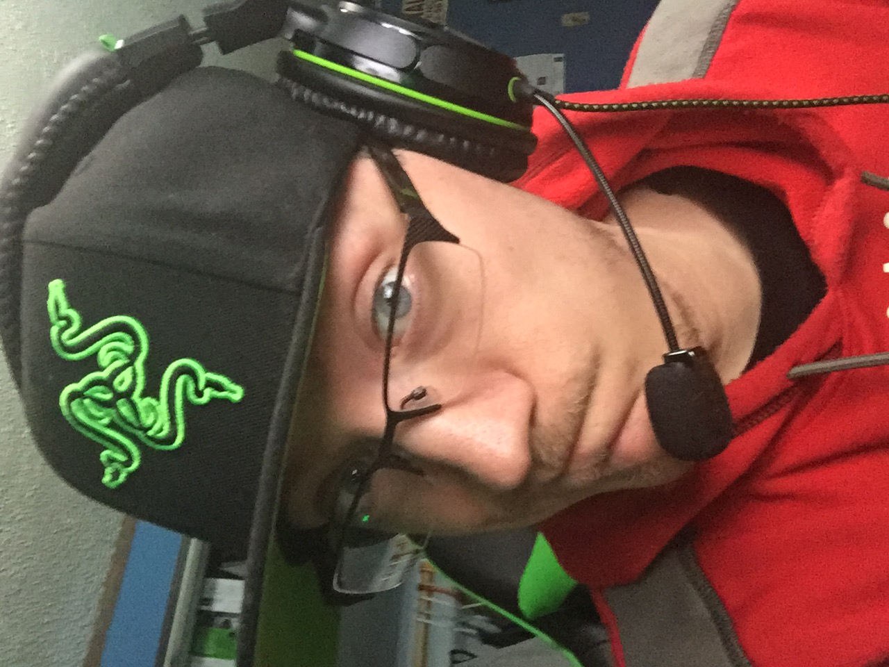

Home
My name is Jeremiah Philip Bird, I am 30 years old, and I have a bunch of interest, some of which people consider odd. I will tell you about a couple of them and go into some detail about how I came into them.
- Storm Chasing/Storm Spotting
- Windows Clients (both software and hardware)
My favorite pastime activity is storm chasing. I've had a passion for storms since I can remember. As almost all little kids are, I was once petrified of storms, but getting over my fear lead me to enjoying them.
My second favorite thing in the world is electronics, but more specifically computers. I had gotten my first computer when I was just nine and had built my first computer at the age of twelve. They have made computer building a lot simpler in time, but I get the same enjoyment regardless.
